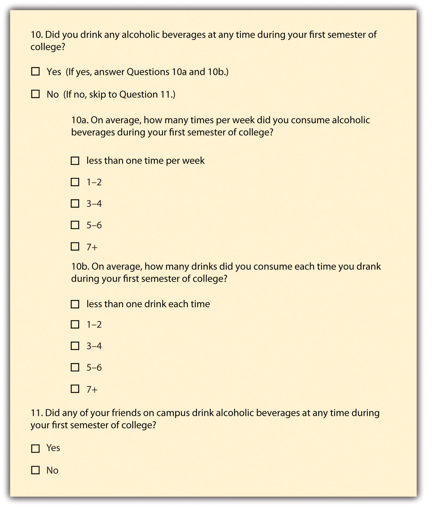
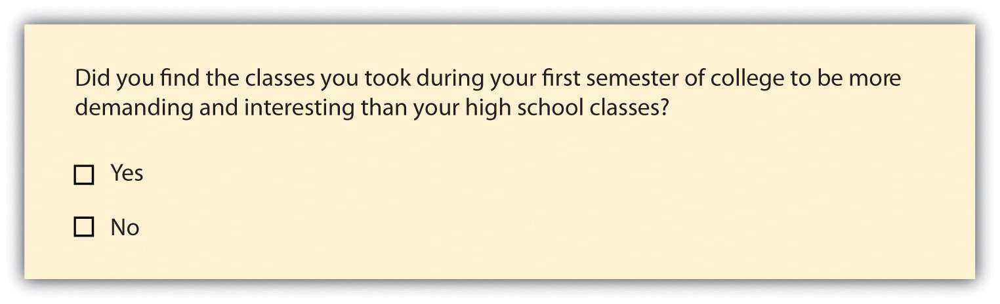
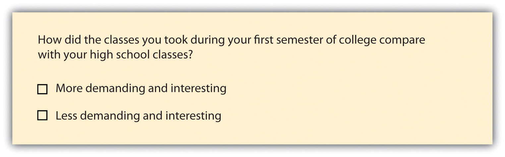
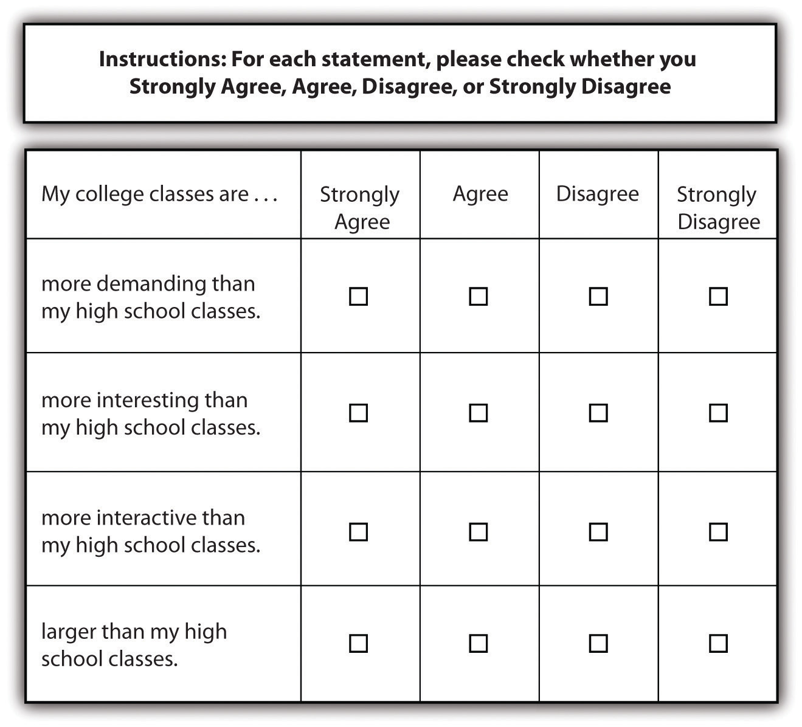
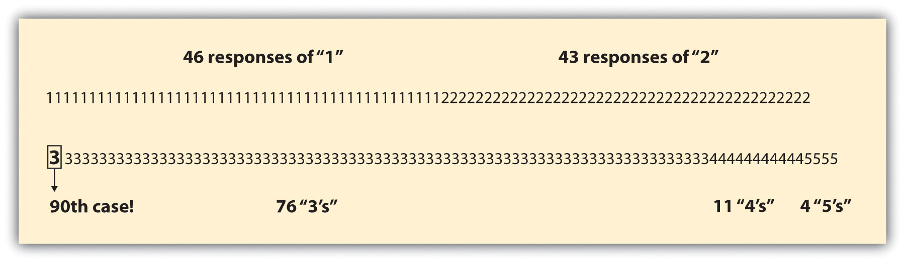

In 2008, the voters of the United States elected our first African American president, Barack Obama. It may not surprise you to learn that when President Obama was coming of age in the 1970s, one-quarter of Americans reported that they would not vote for a qualified African American presidential nominee. Three decades later, when President Obama ran for the presidency, fewer than 8% of Americans still held that position, and President Obama won the election (Smith, 2009).Smith, T. W. (2009). Trends in willingness to vote for a black and woman for president, 1972–2008. GSS Social Change Report No. 55. Chicago, IL: National Opinion Research Center. We know about these trends in voter opinion because the General Social Survey (http://www.norc.uchicago.edu/GSS+Website), a nationally representative survey of American adults, included questions about race and voting over the years described here. Without survey research, we may not know how Americans’ perspectives on race and the presidency shifted over these years.
Most of you have probably taken a survey at one time or another, so you probably have a pretty good idea of what a survey is. Sometimes students in my research methods classes feel that understanding what a survey is and how to write one is so obvious, there’s no need to dedicate any class time to learning about it. This feeling is understandable—surveys are very much a part of our everyday lives—we’ve probably all taken one, we hear about their results in the news, and perhaps we’ve even administered one ourselves. What students quickly learn is that there is more to constructing a good survey than meets the eye. Survey design takes a great deal of thoughtful planning and often a great many rounds of revision. But it is worth the effort. As we’ll learn in this chapter, there are many benefits to choosing survey research as one’s method of data collection. We’ll take a look at what a survey is exactly, what some of the benefits and drawbacks of this method are, how to construct a survey, and what to do with survey data once one has it in hand.
Survey researchA quantitative method for which a researcher poses the same set of questions, typically in a written format, to a sample of individuals. is a quantitative method whereby a researcher poses some set of predetermined questions to an entire group, or sample, of individuals. Survey research is an especially useful approach when a researcher aims to describe or explain features of a very large group or groups. This method may also be used as a way of quickly gaining some general details about one’s population of interest to help prepare for a more focused, in-depth study using time-intensive methods such as in-depth interviews or field research. In this case, a survey may help a researcher identify specific individuals or locations from which to collect additional data.
As is true of all methods of data collection, survey research is better suited to answering some kinds of research question more than others. In addition, as you’ll recall from Chapter 6 "Defining and Measuring Concepts", operationalization works differently with different research methods. If your interest is in political activism, for example, you likely operationalize that concept differently in a survey than you would for a field research study of the same topic.
Survey research, as with all methods of data collection, comes with both strengths and weaknesses. We’ll examine both in this section.
Researchers employing survey methods to collect data enjoy a number of benefits. First, surveys are an excellent way to gather lots of information from many people. In my own study of older people’s experiences in the workplace, I was able to mail a written questionnaire to around 500 people who lived throughout the state of Maine at a cost of just over $1,000. This cost included printing copies of my seven-page survey, printing a cover letter, addressing and stuffing envelopes, mailing the survey, and buying return postage for the survey. I realize that $1,000 is nothing to sneeze at. But just imagine what it might have cost to visit each of those people individually to interview them in person. Consider the cost of gas to drive around the state, other travel costs, such as meals and lodging while on the road, and the cost of time to drive to and talk with each person individually. We could double, triple, or even quadruple our costs pretty quickly by opting for an in-person method of data collection over a mailed survey. Thus surveys are relatively cost effective.
Related to the benefit of cost effectiveness is a survey’s potential for generalizability. Because surveys allow researchers to collect data from very large samples for a relatively low cost, survey methods lend themselves to probability sampling techniques, which we discussed in Chapter 7 "Sampling". Of all the data-collection methods described in this text, survey research is probably the best method to use when one hopes to gain a representative picture of the attitudes and characteristics of a large group.
Survey research also tends to be a reliable method of inquiry. This is because surveys are standardizedThe same questions, phrased in the same way, are posed to all participants, consistent. in that the same questions, phrased in exactly the same way, are posed to participants. Other methods, such as qualitative interviewing, which we’ll learn about in Chapter 9 "Interviews: Qualitative and Quantitative Approaches", do not offer the same consistency that a quantitative survey offers. This is not to say that all surveys are always reliable. A poorly phrased question can cause respondents to interpret its meaning differently, which can reduce that question’s reliability. Assuming well-constructed question and questionnaire design, one strength of survey methodology is its potential to produce reliable results.
The versatilityA feature of survey research meaning that many different people use surveys for a variety of purposes and in a variety of settings. of survey research is also an asset. Surveys are used by all kinds of people in all kinds of professions. I repeat, surveys are used by all kinds of people in all kinds of professions. Is there a light bulb switching on in your head? I hope so. The versatility offered by survey research means that understanding how to construct and administer surveys is a useful skill to have for all kinds of jobs. Lawyers might use surveys in their efforts to select juries, social service and other organizations (e.g., churches, clubs, fundraising groups, activist groups) use them to evaluate the effectiveness of their efforts, businesses use them to learn how to market their products, governments use them to understand community opinions and needs, and politicians and media outlets use surveys to understand their constituencies.
In sum, the following are benefits of survey research:
As with all methods of data collection, survey research also comes with a few drawbacks. First, while one might argue that surveys are flexible in the sense that we can ask any number of questions on any number of topics in them, the fact that the survey researcher is generally stuck with a single instrument for collecting data (the questionnaire), surveys are in many ways rather inflexible. Let’s say you mail a survey out to 1,000 people and then discover, as responses start coming in, that your phrasing on a particular question seems to be confusing a number of respondents. At this stage, it’s too late for a do-over or to change the question for the respondents who haven’t yet returned their surveys. When conducting in-depth interviews, on the other hand, a researcher can provide respondents further explanation if they’re confused by a question and can tweak their questions as they learn more about how respondents seem to understand them.
Validity can also be a problem with surveys. Survey questions are standardized; thus it can be difficult to ask anything other than very general questions that a broad range of people will understand. Because of this, survey results may not be as valid as results obtained using methods of data collection that allow a researcher to more comprehensively examine whatever topic is being studied. Let’s say, for example, that you want to learn something about voters’ willingness to elect an African American president, as in our opening example in this chapter. General Social Survey respondents were asked, “If your party nominated an African American for president, would you vote for him if he were qualified for the job?” Respondents were then asked to respond either yes or no to the question. But what if someone’s opinion was more complex than could be answered with a simple yes or no? What if, for example, a person was willing to vote for an African American woman but not an African American man?I am not at all suggesting that such a perspective makes any sense, but it is conceivable that an individual might hold such a perspective.
In sum, potential drawbacks to survey research include the following:
There is much variety when it comes to surveys. This variety comes both in terms of time—when or with what frequency a survey is administered—and in terms of administration—how a survey is delivered to respondents. In this section we’ll take a look at what types of surveys exist when it comes to both time and administration.
In terms of time, there are two main types of surveys: cross-sectional and longitudinal. Cross-sectional surveysSurveys that are administered at one point in time. are those that are administered at just one point in time. These surveys offer researchers a sort of snapshot in time and give us an idea about how things are for our respondents at the particular point in time that the survey is administered. My own study of older workers mentioned previously is an example of a cross-sectional survey. I administered the survey at just one time.
Another example of a cross-sectional survey comes from Aniko Kezdy and colleagues’ study (Kezdy, Martos, Boland, & Horvath-Szabo, 2011)Kezdy, A., Martos, T., Boland, V., & Horvath-Szabo, K. (2011). Religious doubts and mental health in adolescence and young adulthood: The association with religious attitudes. Journal of Adolescence, 34, 39–47. of the association between religious attitudes, religious beliefs, and mental health among students in Hungary. These researchers administered a single, one-time-only, cross-sectional survey to a convenience sample of 403 high school and college students. The survey focused on how religious attitudes impact various aspects of one’s life and health. The researchers found from analysis of their cross-sectional data that anxiety and depression were highest among those who had both strong religious beliefs and also some doubts about religion. Yet another recent example of cross-sectional survey research can be seen in Bateman and colleagues’ study (Bateman, Pike, & Butler, 2011) of how the perceived publicness of social networking sites influences users’ self-disclosures.Bateman, P. J., Pike, J. C., & Butler, B. S. (2011). To disclose or not: Publicness in social networking sites. Information Technology & People, 24, 78–100. These researchers administered an online survey to undergraduate and graduate business students. They found that even though revealing information about oneself is viewed as key to realizing many of the benefits of social networking sites, respondents were less willing to disclose information about themselves as their perceptions of a social networking site’s publicness rose. That is, there was a negative relationship between perceived publicness of a social networking site and plans to self-disclose on the site.
One problem with cross-sectional surveys is that the events, opinions, behaviors, and other phenomena that such surveys are designed to assess don’t generally remain stagnant. Thus generalizing from a cross-sectional survey about the way things are can be tricky; perhaps you can say something about the way things were in the moment that you administered your survey, but it is difficult to know whether things remained that way for long after you administered your survey. Think, for example, about how Americans might have responded if administered a survey asking for their opinions on terrorism on September 10, 2001. Now imagine how responses to the same set of questions might differ were they administered on September 12, 2001. The point is not that cross-sectional surveys are useless; they have many important uses. But researchers must remember what they have captured by administering a cross-sectional survey; that is, as previously noted, a snapshot of life as it was at the time that the survey was administered.
One way to overcome this sometimes problematic aspect of cross-sectional surveys is to administer a longitudinal survey. Longitudinal surveysSurveys that enable a researcher to make observations over some extended period of time. are those that enable a researcher to make observations over some extended period of time. There are several types of longitudinal surveys, including trend, panel, and cohort surveys. We’ll discuss all three types here, along with another type of survey called retrospective. Retrospective surveys fall somewhere in between cross-sectional and longitudinal surveys.
The first type of longitudinal survey is called a trend surveyA type of longitudinal survey where a researcher examines changes in trends over time; the same people do not necessarily participate in the survey more than once.. The main focus of a trend survey is, perhaps not surprisingly, trends. Researchers conducting trend surveys are interested in how people’s inclinations change over time. The Gallup opinion polls are an excellent example of trend surveys. You can read more about Gallup on their website: http://www.gallup.com/Home.aspx. To learn about how public opinion changes over time, Gallup administers the same questions to people at different points in time. For example, for several years Gallup has polled Americans to find out what they think about gas prices (something many of us happen to have opinions about). One thing we’ve learned from Gallup’s polling is that price increases in gasoline caused financial hardship for 67% of respondents in 2011, up from 40% in the year 2000. Gallup’s findings about trends in opinions about gas prices have also taught us that whereas just 34% of people in early 2000 thought the current rise in gas prices was permanent, 54% of people in 2011 believed the rise to be permanent. Thus through Gallup’s use of trend survey methodology, we’ve learned that Americans seem to feel generally less optimistic about the price of gas these days than they did 10 or so years ago.You can read about these and other findings on Gallup’s gasoline questions at http://www.gallup.com/poll/147632/Gas-Prices.aspx#1. It should be noted that in a trend survey, the same people are probably not answering the researcher’s questions each year. Because the interest here is in trends, not specific people, as long as the researcher’s sample is representative of whatever population he or she wishes to describe trends for, it isn’t important that the same people participate each time.
Next are panel surveysA type of longitudinal survey in which a researcher surveys the exact same sample several times over a period of time.. Unlike in a trend survey, in a panel survey the same people do participate in the survey each time it is administered. As you might imagine, panel studies can be difficult and costly. Imagine trying to administer a survey to the same 100 people every year for, say, 5 years in a row. Keeping track of where people live, when they move, and when they die takes resources that researchers often don’t have. When they do, however, the results can be quite powerful. The Youth Development Study (YDS), administered from the University of Minnesota, offers an excellent example of a panel study. You can read more about the Youth Development Study at its website: http://www.soc.umn.edu/research/yds. Since 1988, YDS researchers have administered an annual survey to the same 1,000 people. Study participants were in ninth grade when the study began, and they are now in their thirties. Several hundred papers, articles, and books have been written using data from the YDS. One of the major lessons learned from this panel study is that work has a largely positive impact on young people (Mortimer, 2003).Mortimer, J. T. (2003). Working and growing up in America. Cambridge, MA: Harvard University Press. Contrary to popular beliefs about the impact of work on adolescents’ performance in school and transition to adulthood, work in fact increases confidence, enhances academic success, and prepares students for success in their future careers. Without this panel study, we may not be aware of the positive impact that working can have on young people.
Another type of longitudinal survey is a cohort surveyA type of longitudinal survey where a researcher’s interest is in a particular group of people who share some common experience or characteristic.. In a cohort survey, a researcher identifies some category of people that are of interest and then regularly surveys people who fall into that category. The same people don’t necessarily participate from year to year, but all participants must meet whatever categorical criteria fulfill the researcher’s primary interest. Common cohorts that may be of interest to researchers include people of particular generations or those who were born around the same time period, graduating classes, people who began work in a given industry at the same time, or perhaps people who have some specific life experience in common. An example of this sort of research can be seen in Christine Percheski’s work (2008)Percheski, C. (2008). Opting out? Cohort differences in professional women’s employment rates from 1960 to 2005. American Sociological Review, 73, 497–517. on cohort differences in women’s employment. Percheski compared women’s employment rates across seven different generational cohorts, from Progressives born between 1906 and 1915 to Generation Xers born between 1966 and 1975. She found, among other patterns, that professional women’s labor force participation had increased across all cohorts. She also found that professional women with young children from Generation X had higher labor force participation rates than similar women from previous generations, concluding that mothers do not appear to be opting out of the workforce as some journalists have speculated (Belkin, 2003).Belkin, L. (2003, October 26). The opt-out revolution. New York Times, pp. 42–47, 58, 85–86.
All three types of longitudinal surveys share the strength that they permit a researcher to make observations over time. This means that if whatever behavior or other phenomenon the researcher is interested in changes, either because of some world event or because people age, the researcher will be able to capture those changes. Table 8.1 "Types of Longitudinal Surveys" summarizes each of the three types of longitudinal surveys.
Table 8.1 Types of Longitudinal Surveys
| Sample type | Description |
|---|---|
| Trend | Researcher examines changes in trends over time; the same people do not necessarily participate in the survey more than once. |
| Panel | Researcher surveys the exact same sample several times over a period of time. |
| Cohort | Researcher identifies some category of people that are of interest and then regularly surveys people who fall into that category. |
Finally, retrospective surveysA type of survey in which participants are asked to report events from the past. are similar to other longitudinal studies in that they deal with changes over time, but like a cross-sectional study, they are administered only once. In a retrospective survey, participants are asked to report events from the past. By having respondents report past behaviors, beliefs, or experiences, researchers are able to gather longitudinal-like data without actually incurring the time or expense of a longitudinal survey. Of course, this benefit must be weighed against the possibility that people’s recollections of their pasts may be faulty. Imagine, for example, that you’re asked in a survey to respond to questions about where, how, and with whom you spent last Valentine’s Day. As last Valentine’s Day can’t have been more than 12 months ago, chances are good that you might be able to respond accurately to any survey questions about it. But now let’s say the research wants to know how last Valentine’s Day compares to previous Valentine’s Days, so he asks you to report on where, how, and with whom you spent the preceding six Valentine’s Days. How likely is it that you will remember? Will your responses be as accurate as they might have been had you been asked the question each year over the past 6 years rather than asked to report on all years today?
In sum, when or with what frequency a survey is administered will determine whether your survey is cross-sectional or longitudinal. While longitudinal surveys are certainly preferable in terms of their ability to track changes over time, the time and cost required to administer a longitudinal survey can be prohibitive. As you may have guessed, the issues of time described here are not necessarily unique to survey research. Other methods of data collection can be cross-sectional or longitudinal—these are really matters of research design. But we’ve placed our discussion of these terms here because they are most commonly used by survey researchers to describe the type of survey administered. Another aspect of survey administration deals with how surveys are administered. We’ll examine that next.
Surveys vary not just in terms of when they are administered but also in terms of how they are administered. One common way to administer surveys is in the form of self-administered questionnairesA set of written questions that a research participant responds to by filling in answers on her or his own without the assistance of a researcher.. This means that a research participant is given a set of questions, in writing, to which he or she is asked to respond. Self-administered questionnaires can be delivered in hard copy format, typically via mail, or increasingly more commonly, online. We’ll consider both modes of delivery here.
Hard copy self-administered questionnaires may be delivered to participants in person or via snail mail. Perhaps you’ve take a survey that was given to you in person; on many college campuses it is not uncommon for researchers to administer surveys in large social science classes (as you might recall from the discussion in our chapter on sampling). In my own introduction to sociology courses, I’ve welcomed graduate students and professors doing research in areas that are relevant to my students, such as studies of campus life, to administer their surveys to the class. If you are ever asked to complete a survey in a similar setting, it might be interesting to note how your perspective on the survey and its questions could be shaped by the new knowledge you’re gaining about survey research in this chapter.
Researchers may also deliver surveys in person by going door-to-door and either asking people to fill them out right away or making arrangements for the researcher to return to pick up completed surveys. Though the advent of online survey tools has made door-to-door delivery of surveys less common, I still see an occasional survey researcher at my door, especially around election time. This mode of gathering data is apparently still used by political campaign workers, at least in some areas of the country.
If you are not able to visit each member of your sample personally to deliver a survey, you might consider sending your survey through the mail. While this mode of delivery may not be ideal (imagine how much less likely you’d probably be to return a survey that didn’t come with the researcher standing on your doorstep waiting to take it from you), sometimes it is the only available or the most practical option. As I’ve said, this may not be the most ideal way of administering a survey because it can be difficult to convince people to take the time to complete and return your survey.
Often survey researchers who deliver their surveys via snail mail may provide some advance notice to respondents about the survey to get people thinking about and preparing to complete it. They may also follow up with their sample a few weeks after their survey has been sent out. This can be done not only to remind those who have not yet completed the survey to please do so but also to thank those who have already returned the survey. Most survey researchers agree that this sort of follow-up is essential for improving mailed surveys’ return rates (Babbie, 2010).Babbie, E. (2010). The practice of social research (12th ed.). Belmont, CA: Wadsworth.
In my own study of older workers’ harassment experiences, people in the sample were notified in advance of the survey mailing via an article describing the research in a newsletter they received from the agency with whom I had partnered to conduct the survey. When I mailed the survey, a $1 bill was included with each in order to provide some incentive and an advance token of thanks to participants for returning the surveys. Two months after the initial mailing went out, those who were sent a survey were contacted by phone. While returned surveys did not contain any identifying information about respondents, my research assistants contacted individuals to whom a survey had been mailed to remind them that it was not too late to return their survey and to say thank to those who may have already done so. Four months after the initial mailing went out, everyone on the original mailing list received a letter thanking those who had returned the survey and once again reminding those who had not that it was not too late to do so. The letter included a return postcard for respondents to complete should they wish to receive another copy of the survey. Respondents were also provided a telephone number to call and were provided the option of completing the survey by phone. As you can see, administering a survey by mail typically involves much more than simply arranging a single mailing; participants may be notified in advance of the mailing, they then receive the mailing, and then several follow-up contacts will likely be made after the survey has been mailed.
Earlier I mentioned online delivery as another way to administer a survey. This delivery mechanism is becoming increasingly common, no doubt because it is easy to use, relatively cheap, and may be quicker than knocking on doors or waiting for mailed surveys to be returned. To deliver a survey online, a researcher may subscribe to a service that offers online delivery or use some delivery mechanism that is available for free. SurveyMonkey offers both free and paid online survey services (http://www.surveymonkey.com). One advantage to using a service like SurveyMonkey, aside from the advantages of online delivery already mentioned, is that results can be provided to you in formats that are readable by data analysis programs such as SPSS, Systat, and Excel. This saves you, the researcher, the step of having to manually enter data into your analysis program, as you would if you administered your survey in hard copy format.
Many of the suggestions provided for improving the response rate on a hard copy questionnaire apply to online questionnaires as well. One difference of course is that the sort of incentives one can provide in an online format differ from those that can be given in person or sent through the mail. But this doesn’t mean that online survey researchers cannot offer completion incentives to their respondents. I’ve taken a number of online surveys; many of these did not come with an incentive other than the joy of knowing that I’d helped a fellow social scientist do his or her job, but on one I was given a printable $5 coupon to my university’s campus dining services on completion, and another time I was given a coupon code to use for $10 off any order on Amazon.com. I’ve taken other online surveys where on completion I could provide my name and contact information if I wished to be entered into a drawing together with other study participants to win a larger gift, such as a $50 gift card or an iPad.
Sometimes surveys are administered by having a researcher actually pose questions directly to respondents rather than having respondents read the questions on their own. These types of surveys are a form of interviews. We discuss interviews in Chapter 9 "Interviews: Qualitative and Quantitative Approaches", where we’ll examine interviews of the survey (or quantitative) type and qualitative interviews as well. Interview methodology differs from survey research in that data are collected via a personal interaction. Because asking people questions in person comes with a set of guidelines and concerns that differ from those associated with asking questions on paper or online, we’ll reserve our discussion of those guidelines and concerns for Chapter 9 "Interviews: Qualitative and Quantitative Approaches".
Whatever delivery mechanism you choose, keep in mind that there are pros and cons to each of the options described here. While online surveys may be faster and cheaper than mailed surveys, can you be certain that every person in your sample will have the necessary computer hardware, software, and Internet access in order to complete your online survey? On the other hand, perhaps mailed surveys are more likely to reach your entire sample but also more likely to be lost and not returned. The choice of which delivery mechanism is best depends on a number of factors including your resources, the resources of your study participants, and the time you have available to distribute surveys and wait for responses. In my own survey of older workers, I would have much preferred to administer my survey online, but because so few people in my sample were likely to have computers, and even fewer would have Internet access, I chose instead to mail paper copies of the survey to respondents’ homes. Understanding the characteristics of your study’s population is key to identifying the appropriate mechanism for delivering your survey.
To this point we’ve considered several general points about surveys including when to use them, some of their pros and cons, and how often and in what ways to administer surveys. In this section we’ll get more specific and take a look at how to pose understandable questions that will yield useable data and how to present those questions on your questionnaire.
The first thing you need to do in order to write effective survey questions is identify what exactly it is that you wish to know. As silly as it sounds to state what seems so completely obvious, I can’t stress enough how easy it is to forget to include important questions when designing a survey. Let’s say you want to understand how students at your school made the transition from high school to college. Perhaps you wish to identify which students were comparatively more or less successful in this transition and which factors contributed to students’ success or lack thereof. To understand which factors shaped successful students’ transitions to college, you’ll need to include questions in your survey about all the possible factors that could contribute. Consulting the literature on the topic will certainly help, but you should also take the time to do some brainstorming on your own and to talk with others about what they think may be important in the transition to college. Perhaps time or space limitations won’t allow you to include every single item you’ve come up with, so you’ll also need to think about ranking your questions so that you can be sure to include those that you view as most important.
Although I have stressed the importance of including questions on all topics you view as important to your overall research question, you don’t want to take an everything-but-the-kitchen-sink approach by uncritically including every possible question that occurs to you. Doing so puts an unnecessary burden on your survey respondents. Remember that you have asked your respondents to give you their time and attention and to take care in responding to your questions; show them your respect by only asking questions that you view as important.
Once you’ve identified all the topics about which you’d like to ask questions, you’ll need to actually write those questions. Questions should be as clear and to the point as possible. This is not the time to show off your creative writing skills; a survey is a technical instrument and should be written in a way that is as direct and succinct as possible. As I’ve said, your survey respondents have agreed to give their time and attention to your survey. The best way to show your appreciation for their time is to not waste it. Ensuring that your questions are clear and not overly wordy will go a long way toward showing your respondents the gratitude they deserve.
Related to the point about not wasting respondents’ time, make sure that every question you pose will be relevant to every person you ask to complete it. This means two things: first, that respondents have knowledge about whatever topic you are asking them about, and second, that respondents have experience with whatever events, behaviors, or feelings you are asking them to report. You probably wouldn’t want to ask a sample of 18-year-old respondents, for example, how they would have advised President Reagan to proceed when news of the United States’ sale of weapons to Iran broke in the mid-1980s. For one thing, few 18-year-olds are likely to have any clue about how to advise a president (nor does this 30-something-year-old). Furthermore, the 18-year-olds of today were not even alive during Reagan’s presidency, so they have had no experience with the event about which they are being questioned. In our example of the transition to college, heeding the criterion of relevance would mean that respondents must understand what exactly you mean by “transition to college” if you are going to use that phrase in your survey and that respondents must have actually experienced the transition to college themselves.
If you decide that you do wish to pose some questions about matters with which only a portion of respondents will have had experience, it may be appropriate to introduce a filter questionA question designed to identify some subset of survey respondents who are then asked additional questions that are not relevant to the entire sample. into your survey. A filter question is designed to identify some subset of survey respondents who are asked additional questions that are not relevant to the entire sample. Perhaps in your survey on the transition to college you want to know whether substance use plays any role in students’ transitions. You may ask students how often they drank during their first semester of college. But this assumes that all students drank. Certainly some may have abstained, and it wouldn’t make any sense to ask the nondrinkers how often they drank. Nevertheless, it seems reasonable that drinking frequency may have an impact on someone’s transition to college, so it is probably worth asking this question even if doing so violates the rule of relevance for some respondents. This is just the sort of instance when a filter question would be appropriate. You may pose the question as it is presented in Figure 8.8 "Filter Question".
Figure 8.8 Filter Question
There are some ways of asking questions that are bound to confuse a good many survey respondents. Survey researchers should take great care to avoid these kinds of questions. These include questions that pose double negatives, those that use confusing or culturally specific terms, and those that ask more than one question but are posed as a single question. Any time respondents are forced to decipher questions that utilize two forms of negation, confusion is bound to ensue. Taking the previous question about drinking as our example, what if we had instead asked, “Did you not drink during your first semester of college?” A response of no would mean that the respondent did actually drink—he or she did not not drink. This example is obvious, but hopefully it drives home the point to be careful about question wording so that respondents are not asked to decipher double negatives. In general, avoiding negative terms in your question wording will help to increase respondent understanding.Though this is generally true, some researchers argue that negatively worded questions should be integrated with positively worded questions in order to ensure that respondents have actually carefully read each question. See, for example, the following: Vaterlaus, M., & Higgenbotham, B. (2011). Writing survey questions for local program evaluations. Retrieved from http://extension.usu.edu/files/publications/publication/FC_Evaluation_2011-02pr.pdf
You should also avoid using terms or phrases that may be regionally or culturally specific (unless you are absolutely certain all your respondents come from the region or culture whose terms you are using). When I first moved to Maine from Minnesota, I was totally confused every time I heard someone use the word wicked. This term has totally different meanings across different regions of the country. I’d come from an area that understood the term wicked to be associated with evil. In my new home, however, wicked is used simply to put emphasis on whatever it is that you’re talking about. So if this chapter is extremely interesting to you, if you live in Maine you might say that it is “wicked interesting.” If you hate this chapter and you live in Minnesota, perhaps you’d describe the chapter simply as wicked. I once overheard one student tell another that his new girlfriend was “wicked athletic.” At the time I thought this meant he’d found a woman who used her athleticism for evil purposes. I’ve come to understand, however, that this woman is probably just exceptionally athletic. While wicked may not be a term you’re likely to use in a survey, the point is to be thoughtful and cautious about whatever terminology you do use.
Asking multiple questions as though they are a single question can also be terribly confusing for survey respondents. There’s a specific term for this sort of question; it is called a double-barreled questionA question that is posed as a single question but in fact asks more than one question.. Using our example of the transition to college, Figure 8.9 "Double-Barreled Question" shows a double-barreled question.
Figure 8.9 Double-Barreled Question
Do you see what makes the question double-barreled? How would someone respond if they felt their college classes were more demanding but also more boring than their high school classes? Or less demanding but more interesting? Because the question combines “demanding” and “interesting,” there is no way to respond yes to one criterion but no to the other.
Another thing to avoid when constructing survey questions is the problem of social desirabilityThe idea that respondents will try to answer questions in a way that will present them in a favorable light.. We all want to look good, right? And we all probably know the politically correct response to a variety of questions whether we agree with the politically correct response or not. In survey research, social desirability refers to the idea that respondents will try to answer questions in a way that will present them in a favorable light. Perhaps we decide that to understand the transition to college, we need to know whether respondents ever cheated on an exam in high school or college. We all know that cheating on exams is generally frowned upon (at least I hope we all know this). So it may be difficult to get people to admit to cheating on a survey. But if you can guarantee respondents’ confidentiality, or even better, their anonymity, chances are much better that they will be honest about having engaged in this socially undesirable behavior. Another way to avoid problems of social desirability is to try to phrase difficult questions in the most benign way possible. Earl Babbie (2010)Babbie, E. (2010). The practice of social research (12th ed.). Belmont, CA: Wadsworth. offers a useful suggestion for helping you do this—simply imagine how you would feel responding to your survey questions. If you would be uncomfortable, chances are others would as well.
Finally, it is important to get feedback on your survey questions from as many people as possible, especially people who are like those in your sample. Now is not the time to be shy. Ask your friends for help, ask your mentors for feedback, ask your family to take a look at your survey as well. The more feedback you can get on your survey questions, the better the chances that you will come up with a set of questions that are understandable to a wide variety of people and, most importantly, to those in your sample.
In sum, in order to pose effective survey questions, researchers should do the following:
While posing clear and understandable questions in your survey is certainly important, so, too, is providing respondents with unambiguous response optionsThe answers that are provided to for each question in a survey.. Response options are the answers that you provide to the people taking your survey. Generally respondents will be asked to choose a single (or best) response to each question you pose, though certainly it makes sense in some cases to instruct respondents to choose multiple response options. One caution to keep in mind when accepting multiple responses to a single question, however, is that doing so may add complexity when it comes to tallying and analyzing your survey results.
Offering response options assumes that your questions will be closed-ended questionsA survey question for which the researcher provides respondents with a limited set of clear response options.. In a quantitative written survey, which is the type of survey we’ve been discussing here, chances are good that most if not all your questions will be closed ended. This means that you, the researcher, will provide respondents with a limited set of options for their responses. To write an effective closed-ended question, there are a couple of guidelines worth following. First, be sure that your response options are mutually exclusive. Look back at Figure 8.8 "Filter Question", which contains questions about how often and how many drinks respondents consumed. Do you notice that there are no overlapping categories in the response options for these questions? This is another one of those points about question construction that seems fairly obvious but that can be easily overlooked. Response options should also be exhaustive. In other words, every possible response should be covered in the set of response options that you provide. For example, note that in question 10a in Figure 8.8 "Filter Question" we have covered all possibilities—those who drank, say, an average of once per month can choose the first response option (“less than one time per week”) while those who drank multiple times a day each day of the week can choose the last response option (“7+”). All the possibilities in between these two extremes are covered by the middle three response options.
Surveys need not be limited to closed-ended questions. Sometimes survey researchers include open-ended questionsA survey question for which the researcher does not provide respondents with response options; instead, respondents answer in their own words. in their survey instruments as a way to gather additional details from respondents. An open-ended question does not include response options; instead, respondents are asked to reply to the question in their own way, using their own words. These questions are generally used to find out more about a survey participant’s experiences or feelings about whatever they are being asked to report in the survey. If, for example, a survey includes closed-ended questions asking respondents to report on their involvement in extracurricular activities during college, an open-ended question could ask respondents why they participated in those activities or what they gained from their participation. While responses to such questions may also be captured using a closed-ended format, allowing participants to share some of their responses in their own words can make the experience of completing the survey more satisfying to respondents and can also reveal new motivations or explanations that had not occurred to the researcher.
In Section 8.4.1 "Asking Effective Questions" we discussed double-barreled questions, but response options can also be double barreled, and this should be avoided. Figure 8.10 "Double-Barreled Response Options" is an example of a question that uses double-barreled response options.
Figure 8.10 Double-Barreled Response Options
Other things to avoid when it comes to response options include fence-sitting and floating. Fence-sittersRespondents who present themselves as neutral when in truth they have an opinion. are respondents who choose neutral response options, even if they have an opinion. This can occur if respondents are given, say, five rank-ordered response options, such as strongly agree, agree, no opinion, disagree, and strongly disagree. Some people will be drawn to respond “no opinion” even if they have an opinion, particularly if their true opinion is the nonsocially desirable opinion. FloatersRespondents who choose a substantive answer to a question when in truth they don’t understand the question or the response options., on the other hand, are those that choose a substantive answer to a question when really they don’t understand the question or don’t have an opinion. If a respondent is only given four rank-ordered response options, such as strongly agree, agree, disagree, and strongly disagree, those who have no opinion have no choice but to select a response that suggests they have an opinion.
As you can see, floating is the flip side of fence-sitting. Thus the solution to one problem is often the cause of the other. How you decide which approach to take depends on the goals of your research. Sometimes researchers actually want to learn something about people who claim to have no opinion. In this case, allowing for fence-sitting would be necessary. Other times researchers feel confident their respondents will all be familiar with every topic in their survey. In this case, perhaps it is OK to force respondents to choose an opinion. There is no always-correct solution to either problem.
Finally, using a matrix is a nice way of streamlining response options. A matrixQuestion type that that lists a set of questions for which the answer categories are all the same. is a question type that that lists a set of questions for which the answer categories are all the same. If you have a set of questions for which the response options are the same, it may make sense to create a matrix rather than posing each question and its response options individually. Not only will this save you some space in your survey but it will also help respondents progress through your survey more easily. A sample matrix can be seen in Figure 8.11 "Survey Questions Utilizing Matrix Format".
Figure 8.11 Survey Questions Utilizing Matrix Format
In addition to constructing quality questions and posing clear response options, you’ll also need to think about how to present your written questions and response options to survey respondents. Questions are presented on a questionnaireThe document (either hard copy or online) that contains survey questions on which respondents read and mark their responses., the document (either hard copy or online) that contains all your survey questions that respondents read and mark their responses on. Designing questionnaires takes some thought, and in this section we’ll discuss the sorts of things you should think about as you prepare to present your well-constructed survey questions on a questionnaire.
One of the first things to do once you’ve come up with a set of survey questions you feel confident about is to group those questions thematically. In our example of the transition to college, perhaps we’d have a few questions asking about study habits, others focused on friendships, and still others on exercise and eating habits. Those may be the themes around which we organize our questions. Or perhaps it would make more sense to present any questions we had about precollege life and habits and then present a series of questions about life after beginning college. The point here is to be deliberate about how you present your questions to respondents.
Once you have grouped similar questions together, you’ll need to think about the order in which to present those question groups. Most survey researchers agree that it is best to begin a survey with questions that will want to make respondents continue (Babbie, 2010; Dillman, 2000; Neuman, 2003).Babbie, E. (2010). The practice of social research (12th ed.). Belmont, CA: Wadsworth; Dillman, D. A. (2000). Mail and Internet surveys: The tailored design method (2nd ed.). New York, NY: Wiley; Neuman, W. L. (2003). Social research methods: Qualitative and quantitative approaches (5th ed.). Boston, MA: Pearson. In other words, don’t bore respondents, but don’t scare them away either. There’s some disagreement over where on a survey to place demographic questions such as those about a person’s age, gender, and race. On the one hand, placing them at the beginning of the questionnaire may lead respondents to think the survey is boring, unimportant, and not something they want to bother completing. On the other hand, if your survey deals with some very sensitive or difficult topic, such as child sexual abuse or other criminal activity, you don’t want to scare respondents away or shock them by beginning with your most intrusive questions.
In truth, the order in which you present questions on a survey is best determined by the unique characteristics of your research—only you, the researcher, hopefully in consultation with people who are willing to provide you with feedback, can determine how best to order your questions. To do so, think about the unique characteristics of your topic, your questions, and most importantly, your sample. Keeping in mind the characteristics and needs of the people you will ask to complete your survey should help guide you as you determine the most appropriate order in which to present your questions.
You’ll also need to consider the time it will take respondents to complete your questionnaire. Surveys vary in length, from just a page or two to a dozen or more pages, which means they also vary in the time it takes to complete them. How long to make your survey depends on several factors. First, what is it that you wish to know? Wanting to understand how grades vary by gender and year in school certainly requires fewer questions than wanting to know how people’s experiences in college are shaped by demographic characteristics, college attended, housing situation, family background, college major, friendship networks, and extracurricular activities. Keep in mind that even if your research question requires a good number of questions be included in your questionnaire, do your best to keep the questionnaire as brief as possible. Any hint that you’ve thrown in a bunch of useless questions just for the sake of throwing them in will turn off respondents and may make them not want to complete your survey.
Second, and perhaps more important, how long are respondents likely to be willing to spend completing your questionnaire? If you are studying college students, asking them to use their precious fun time away from studying to complete your survey may mean they won’t want to spend more than a few minutes on it. But if you have the endorsement of a professor who is willing to allow you to administer your survey in class, students may be willing to give you a little more time (though perhaps the professor will not). The time that survey researchers ask respondents to spend on questionnaires varies greatly. Some advise that surveys should not take longer than about 15 minutes to complete (cited in Babbie 2010),This can be found at http://www.worldopinion.com/the_frame/frame4.html, cited in Babbie, E. (2010). The practice of social research (12th ed.). Belmont, CA: Wadsworth. others suggest that up to 20 minutes is acceptable (Hopper, 2010).Hopper, J. (2010). How long should a survey be? Retrieved from http://www.verstaresearch.com/blog/how-long-should-a-survey-be As with question order, there is no clear-cut, always-correct answer about questionnaire length. The unique characteristics of your study and your sample should be considered in order to determine how long to make your questionnaire.
A good way to estimate the time it will take respondents to complete your questionnaire is through pretestingGetting feedback on a questionnaire so that it can be improved before it is administered.. Pretesting allows you to get feedback on your questionnaire so you can improve it before you actually administer it. Pretesting can be quite expensive and time consuming if you wish to test your questionnaire on a large sample of people who very much resemble the sample to whom you will eventually administer the finalized version of your questionnaire. But you can learn a lot and make great improvements to your questionnaire simply by pretesting with a small number of people to whom you have easy access (perhaps you have a few friends who owe you a favor). By pretesting your questionnaire you can find out how understandable your questions are, get feedback on question wording and order, find out whether any of your questions are exceptionally boring or offensive, and learn whether there are places where you should have included filter questions, to name just a few of the benefits of pretesting. You can also time pretesters as they take your survey. Ask them to complete the survey as though they were actually members of your sample. This will give you a good idea about what sort of time estimate to provide respondents when it comes time to actually administer your survey, and about whether you have some wiggle room to add additional items or need to cut a few items.
Perhaps this goes without saying, but your questionnaire should also be attractive. A messy presentation style can confuse respondents or, at the very least, annoy them. Be brief, to the point, and as clear as possible. Avoid cramming too much into a single page, make your font size readable (at least 12 point), leave a reasonable amount of space between items, and make sure all instructions are exceptionally clear. Think about books, documents, articles, or web pages that you have read yourself—which were relatively easy to read and easy on the eyes and why? Try to mimic those features in the presentation of your survey questions.
This text is primarily focused on designing research, collecting data, and becoming a knowledgeable and responsible consumer of research. We won’t spend as much time on data analysis, or what to do with our data once we’ve designed a study and collected it, but I will spend some time in each of our data-collection chapters describing some important basics of data analysis that are unique to each method. Entire textbooks could be (and have been) written entirely on data analysis. In fact, if you’ve ever taken a statistics class, you already know much about how to analyze quantitative survey data. Here we’ll go over a few basics that can get you started as you begin to think about turning all those completed questionnaires into findings that you can share.
It can be very exciting to receive those first few completed surveys back from respondents. Hopefully you’ll even get more than a few back, and once you have a handful of completed questionnaires, your feelings may go from initial euphoria to dread. Data are fun and can also be overwhelming. The goal with data analysis is to be able to condense large amounts of information into usable and understandable chunks. Here we’ll describe just how that process works for survey researchers.
As mentioned, the hope is that you will receive a good portion of the questionnaires you distributed back in a completed and readable format. The number of completed questionnaires you receive divided by the number of questionnaires you distributed is your response rateThe percentage of completed questionnaires returned; determined by dividing the number of completed questionnaires by the number originally distributed.. Let’s say your sample included 100 people and you sent questionnaires to each of those people. It would be wonderful if all 100 returned completed questionnaires, but the chances of that happening are about zero. If you’re lucky, perhaps 75 or so will return completed questionnaires. In this case, your response rate would be 75% (75 divided by 100). That’s pretty darn good. Though response rates vary, and researchers don’t always agree about what makes a good response rate, having three-quarters of your surveys returned would be considered good, even excellent, by most survey researchers. There has been lots of research done on how to improve a survey’s response rate. We covered some of these previously, but suggestions include personalizing questionnaires by, for example, addressing them to specific respondents rather than to some generic recipient such as “madam” or “sir”; enhancing the questionnaire’s credibility by providing details about the study, contact information for the researcher, and perhaps partnering with agencies likely to be respected by respondents such as universities, hospitals, or other relevant organizations; sending out prequestionnaire notices and postquestionnaire reminders; and including some token of appreciation with mailed questionnaires even if small, such as a $1 bill.
The major concern with response rates is that a low rate of response may introduce nonresponse biasThe possible result of having too few sample members return completed questionnaires; occurs when respondents differ in important ways from nonrespondents. into a study’s findings. What if only those who have strong opinions about your study topic return their questionnaires? If that is the case, we may well find that our findings don’t at all represent how things really are or, at the very least, we are limited in the claims we can make about patterns found in our data. While high return rates are certainly ideal, a recent body of research shows that concern over response rates may be overblown (Langer, 2003).Langer, G. (2003). About response rates: Some unresolved questions. Public Perspective, May/June, 16–18. Retrieved from http://www.aapor.org/Content/aapor/Resources/PollampSurveyFAQ1/DoResponseRatesMatter/Response_Rates_-_Langer.pdf Several studies have shown that low response rates did not make much difference in findings or in sample representativeness (Curtin, Presser, & Singer, 2000; Keeter, Kennedy, Dimock, Best, & Craighill, 2006; Merkle & Edelman, 2002).Curtin, R., Presser, S., & Singer, E. (2000). The effects of response rate changes on the index of consumer sentiment. Public Opinion Quarterly, 64, 413–428; Keeter, S., Kennedy, C., Dimock, M., Best, J., & Craighill, P. (2006). Gauging the impact of growing nonresponse on estimates from a national RDD telephone survey. Public Opinion Quarterly, 70, 759–779; Merkle, D. M., & Edelman, M. (2002). Nonresponse in exit polls: A comprehensive analysis. In M. Groves, D. A. Dillman, J. L. Eltinge, & R. J. A. Little (Eds.), Survey nonresponse (pp. 243–258). New York, NY: John Wiley and Sons. For now, the jury may still be out on what makes an ideal response rate and on whether, or to what extent, researchers should be concerned about response rates. Nevertheless, certainly no harm can come from aiming for as high a response rate as possible.
Whatever your survey’s response rate, the major concern of survey researchers once they have their nice, big stack of completed questionnaires is condensing their data into manageable, and analyzable, bits. One major advantage of quantitative methods such as survey research, as you may recall from Chapter 1 "Introduction", is that they enable researchers to describe large amounts of data because they can be represented by and condensed into numbers. In order to condense your completed surveys into analyzable numbers, you’ll first need to create a codebookA document that outlines how a survey researcher has translated her or his data from words into numbers.. A codebook is a document that outlines how a survey researcher has translated her or his data from words into numbers. An excerpt from the codebook I developed from my survey of older workers can be seen in Table 8.2 "Codebook Excerpt From Survey of Older Workers". The coded responses you see can be seen in their original survey format in Chapter 6 "Defining and Measuring Concepts", Figure 6.12 "Example of an Index Measuring Financial Security". As you’ll see in the table, in addition to converting response options into numerical values, a short variable name is given to each question. This shortened name comes in handy when entering data into a computer program for analysis.
Table 8.2 Codebook Excerpt From Survey of Older Workers
| Variable # | Variable name | Question | Options |
|---|---|---|---|
| 11 | FINSEC | In general, how financially secure would you say you are? | 1 = Not at all secure |
| 2 = Between not at all and moderately secure | |||
| 3 = Moderately secure | |||
| 4 = Between moderately and very secure | |||
| 5 = Very secure | |||
| 12 | FINFAM | Since age 62, have you ever received money from family members or friends to help make ends meet? | 0 = No |
| 1 = Yes | |||
| 13 | FINFAMT | If yes, how many times? | 1 = 1 or 2 times |
| 2 = 3 or 4 times | |||
| 3 = 5 times or more | |||
| 14 | FINCHUR | Since age 62, have you ever received money from a church or other organization to help make ends meet? | 0 = No |
| 1 = Yes | |||
| 15 | FINCHURT | If yes, how many times? | 1 = 1 or 2 times |
| 2 = 3 or 4 times | |||
| 3 = 5 times or more | |||
| 16 | FINGVCH | Since age 62, have you ever donated money to a church or other organization? | 0 = No |
| 1 = Yes | |||
| 17 | FINGVFAM | Since age 62, have you ever given money to a family member or friend to help them make ends meet? | 0 = No |
| 1 = Yes |
If you’ve administered your questionnaire the old fashioned way, via snail mail, the next task after creating your codebook is data entry. If you’ve utilized an online tool such as SurveyMonkey to administer your survey, here’s some good news—most online survey tools come with the capability of importing survey results directly into a data analysis program. Trust me—this is indeed most excellent news. (If you don’t believe me, I highly recommend administering hard copies of your questionnaire next time around. You’ll surely then appreciate the wonders of online survey administration.)
For those who will be conducting manual data entry, there probably isn’t much I can say about this task that will make you want to perform it other than pointing out the reward of having a database of your very own analyzable data. We won’t get into too many of the details of data entry, but I will mention a few programs that survey researchers may use to analyze data once it has been entered. The first is SPSS, or the Statistical Package for the Social Sciences (http://www.spss.com). SPSS is a statistical analysis computer program designed to analyze just the sort of data quantitative survey researchers collect. It can perform everything from very basic descriptive statistical analysis to more complex inferential statistical analysis. SPSS is touted by many for being highly accessible and relatively easy to navigate (with practice). Other programs that are known for their accessibility include MicroCase (http://www.microcase.com/index.html), which includes many of the same features as SPSS, and Excel (http://office.microsoft.com/en-us/excel-help/about-statistical-analysis-tools-HP005203873.aspx), which is far less sophisticated in its statistical capabilities but is relatively easy to use and suits some researchers’ purposes just fine. Check out the web pages for each, which I’ve provided links to in the chapter’s endnotes, for more information about what each package can do.
Data analysis is about identifying, describing, and explaining patterns. Univariate analysisAnalysis of a single variable. is the most basic form of analysis that quantitative researchers conduct. In this form, researchers describe patterns across just one variable. Univariate analysis includes frequency distributions and measures of central tendency. A frequency distribution is a way of summarizing the distribution of responses on a single survey question. Let’s look at the frequency distribution for just one variable from my older worker survey. We’ll analyze the item mentioned first in the codebook excerpt given earlier, on respondents’ self-reported financial security.
Table 8.3 Frequency Distribution of Older Workers’ Financial Security
| In general, how financially secure would you say you are? | Value | Frequency | Percentage |
|---|---|---|---|
| Label | |||
| Not at all secure | 1 | 46 | 25.6 |
| Between not at all and moderately secure | 2 | 43 | 23.9 |
| Moderately secure | 3 | 76 | 42.2 |
| Between moderately and very secure | 4 | 11 | 6.1 |
| Very secure | 5 | 4 | 2.2 |
| Total valid cases = 180; no response = 3 | |||
As you can see in the frequency distribution on self-reported financial security, more respondents reported feeling “moderately secure” than any other response category. We also learn from this single frequency distribution that fewer than 10% of respondents reported being in one of the two most secure categories.
Another form of univariate analysis that survey researchers can conduct on single variables is measures of central tendency. Measures of central tendency tell us what the most common, or average, response is on a question. Measures of central tendency can be taken for any level variable of those we learned about in Chapter 6 "Defining and Measuring Concepts", from nominal to ratio. There are three kinds of measures of central tendency: modes, medians, and means. ModeA measure of central tendency that identifies the most common response given to a question. refers to the most common response given to a question. Modes are most appropriate for nominal-level variables. A medianA measure of central tendency that identifies the middle point in a distribution of responses. is the middle point in a distribution of responses. Median is the appropriate measure of central tendency for ordinal-level variables. Finally, the measure of central tendency used for interval- and ratio-level variables is the mean. To obtain a meanA measure of central tendency that identifies the average response to an interval- or ratio-level question; found by adding the value of all responses on a single variable and dividing by the total number of responses to that question., one must add the value of all responses on a given variable and then divide that number of the total number of responses.
In the previous example of older workers’ self-reported levels of financial security, the appropriate measure of central tendency would be the median, as this is an ordinal-level variable. If we were to list all responses to the financial security question in order and then choose the middle point in that list, we’d have our median. In Figure 8.12 "Distribution of Responses and Median Value on Workers’ Financial Security", the value of each response to the financial security question is noted, and the middle point within that range of responses is highlighted. To find the middle point, we simply divide the number of valid cases by two. The number of valid cases, 180, divided by 2 is 90, so we’re looking for the 90th value on our distribution to discover the median. As you’ll see in Figure 8.12 "Distribution of Responses and Median Value on Workers’ Financial Security", that value is 3, thus the median on our financial security question is 3, or “moderately secure.”
Figure 8.12 Distribution of Responses and Median Value on Workers’ Financial Security
As you can see, we can learn a lot about our respondents simply by conducting univariate analysis of measures on our survey. We can learn even more, of course, when we begin to examine relationships among variables. Either we can analyze the relationships between two variables, called bivariate analysisAnalysis of the relationships between two variables., or we can examine relationships among more than two variables. This latter type of analysis is known as multivariate analysisAnalysis of the relationships among multiple variables..
Bivariate analysis allows us to assess covariationOccurs when changes in one variable happen together with changes in another. among two variables. This means we can find out whether changes in one variable occur together with changes in another. If two variables do not covary, they are said to have independenceOccurs when there is no relationship between the variables in question.. This means simply that there is no relationship between the two variables in question. To learn whether a relationship exists between two variables, a researcher may cross-tabulateThe process for creating a contingency table. the two variables and present their relationship in a contingency table. A contingency tableDisplays how variation on one variable may be contingent on variation on another. shows how variation on one variable may be contingent on variation on the other. Let’s take a look at a contingency table. In Table 8.4 "Financial Security Among Men and Women Workers Age 62 and Up", I have cross-tabulated two questions from my older worker survey: respondents’ reported gender and their self-rated financial security.
Table 8.4 Financial Security Among Men and Women Workers Age 62 and Up
| Men | Women | |
|---|---|---|
| Not financially secure (%) | 44.1 | 51.8 |
| Moderately financially secure (%) | 48.9 | 39.2 |
| Financially secure (%) | 7.0 | 9.0 |
| Total | N = 43 | N = 135 |
You’ll see in Table 8.4 "Financial Security Among Men and Women Workers Age 62 and Up" that I collapsed a couple of the financial security response categories (recall that there were five categories presented in Table 8.3 "Frequency Distribution of Older Workers’ Financial Security"; here there are just three). Researchers sometimes collapse response categories on items such as this in order to make it easier to read results in a table. You’ll also see that I placed the variable “gender” in the table’s columns and “financial security” in its rows. Typically, values that are contingent on other values are placed in rows (a.k.a. dependent variables), while independent variables are placed in columns. This makes comparing across categories of our independent variable pretty simple. Reading across the top row of our table, we can see that around 44% of men in the sample reported that they are not financially secure while almost 52% of women reported the same. In other words, more women than men reported that they are not financially secure. You’ll also see in the table that I reported the total number of respondents for each category of the independent variable in the table’s bottom row. This is also standard practice in a bivariate table, as is including a table heading describing what is presented in the table.
Researchers interested in simultaneously analyzing relationships among more than two variables conduct multivariate analysis. If I hypothesized that financial security declines for women as they age but increases for men as they age, I might consider adding age to the preceding analysis. To do so would require multivariate, rather than bivariate, analysis. We won’t go into detail here about how to conduct multivariate analysis of quantitative survey items here, but we will return to multivariate analysis in Chapter 14 "Reading and Understanding Social Research", where we’ll discuss strategies for reading and understanding tables that present multivariate statistics. If you are interested in learning more about the analysis of quantitative survey data, I recommend checking out your campus’s offerings in statistics classes. The quantitative data analysis skills you will gain in a statistics class could serve you quite well should you find yourself seeking employment one day.